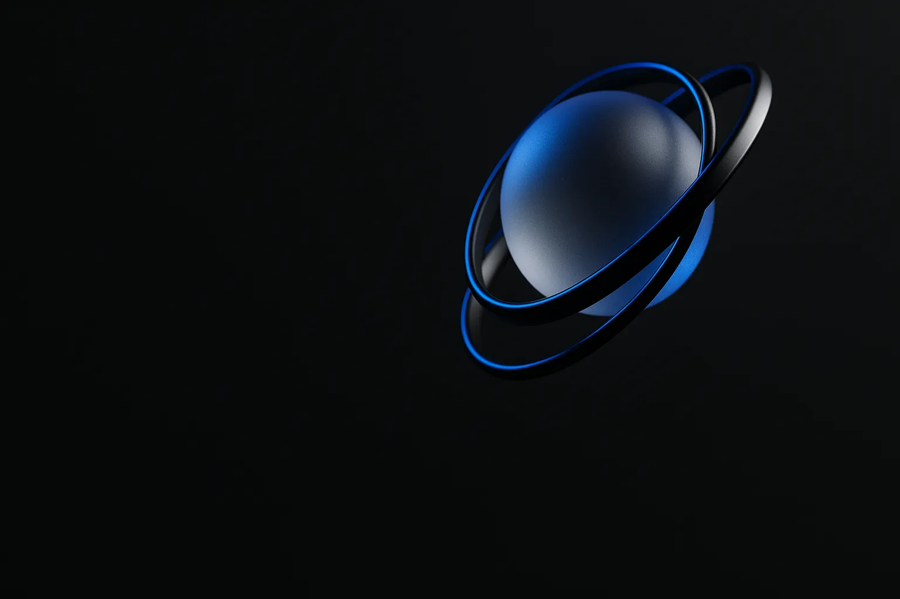
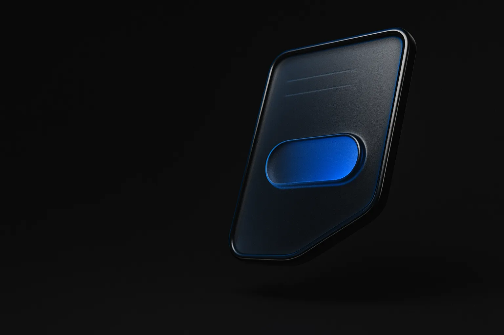
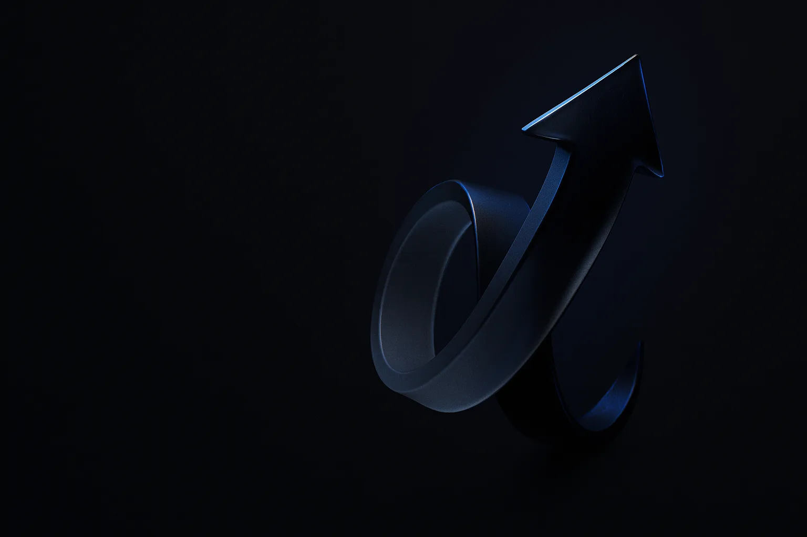
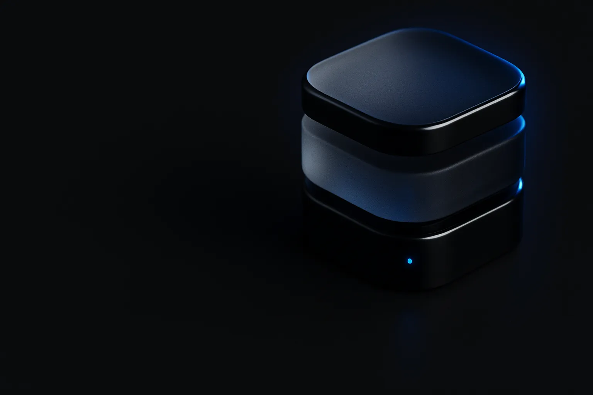

Sua empresa é excelente no que faz, chegou a hora de mostrar isso.
Páginas que transformam visitas em clientes.
Projetos personalizados.
Cada página é feita sob medida, exclusiva como sua marca e planejada para converter.
Quem chega ao seu site entende por que escolher sua empresa?
Você conhece a qualidade do que entrega. Mas quem encontra sua empresa pela primeira vez precisa perceber esse valor antes de dar o próximo passo.
Seu site tem um papel nessa decisão: explicar o que você oferece, mostrar para quem seu serviço faz sentido e deixar claro como entrar em contato.
Por isso, eu planejo a apresentação e o conteúdo a partir do seu negócio. Cada parte da página precisa ajudar o visitante a entender sua oferta e encontrar o que precisa para conversar com você.
Um novo site pode fazer sua empresa vender muito mais

Seu negócio ganha mais credibilidade
desde a primeira visita ao site.
Menos visitantes perdidos.
Mais pessoas virando clientes.
- Anos de experiência
- Clientes atendidos
- Rodadas de ajustes
- Dias de suporte
Veja algumas soluções na prática.
Explore os projetos e observe como a organização das informações e a apresentação dos serviços ajudam a comunicar cada negócio.

Serviços
O projeto começa pelo que seu negócio precisa.
Apresentar sua empresa, divulgar uma oferta ou captar contatos são objetivos diferentes. Eu ajudo você a definir a solução adequada ao momento do seu negócio.
Solicitar orçamento-

01Sites institucionais
Para apresentar sua empresa, organizar seus serviços e reunir as informações que um possível cliente precisa para conhecer seu trabalho e entrar em contato.
-

02Landing pages
Para dar foco a um serviço, produto ou campanha, conduzindo o visitante pelas informações da oferta até a ação desejada.
-

03Páginas de captura
Para apresentar uma oferta ou material e incentivar o visitante a deixar seu contato, criando uma oportunidade de continuar a conversa.
-

04Projetos personalizados
Para necessidades que pedem uma estrutura própria. O escopo é definido a partir dos objetivos do negócio e do que o projeto precisa realizar.
-
05
SEO
Para melhorar a presença da sua empresa nas buscas e ajudar quem procura pelos seus serviços a encontrar informações relevantes sobre seu negócio.
Você acompanha o projeto e entende cada etapa.
Ao longo do trabalho, mantenho um atendimento próximo para alinhar decisões, revisar a proposta e acompanhar a entrega.
-
Entendimento do negócio
Conversamos sobre sua empresa, seu público e o que você precisa alcançar. Esse entendimento orienta a escolha da solução e o planejamento.
-
Planejamento
Organizo a estrutura e as informações do site, definindo o papel de cada parte na apresentação do seu negócio.
-
Desenvolvimento
Transformo o planejamento em um site, trabalhando a apresentação dos serviços e o caminho até o contato.
-
Revisão
Apresento o projeto para sua avaliação. Estão incluídas duas rodadas de ajustes para alinhar a entrega ao que foi combinado.
-
Entrega e suporte
Depois da entrega, acompanho o funcionamento do site com 7 dias de suporte para questões relacionadas ao projeto.
O que você precisa saber antes de começar.
O prazo varia conforme a complexidade do projeto e o envio dos materiais. A previsão é de 5 dias úteis a 3 semanas.
O pagamento é dividido em duas etapas: 50% no início do projeto e 50% na entrega.
Sim. Estão incluídas duas rodadas de ajustes para revisar a proposta apresentada e alinhar os detalhes ao escopo combinado.
Sim. Você conta com 7 dias de suporte após a entrega para resolver questões relacionadas ao funcionamento do site.
Na conversa inicial, eu procuro entender seu objetivo e o momento do negócio. A partir disso, ajudo você a definir se faz sentido criar um site institucional, uma landing page, uma página de captura ou um projeto personalizado.
Vamos planejar o site da sua empresa?
Conte o que seu negócio faz e o que você quer alcançar na internet. Quero entender sua necessidade para propor um projeto que faça sentido para você.